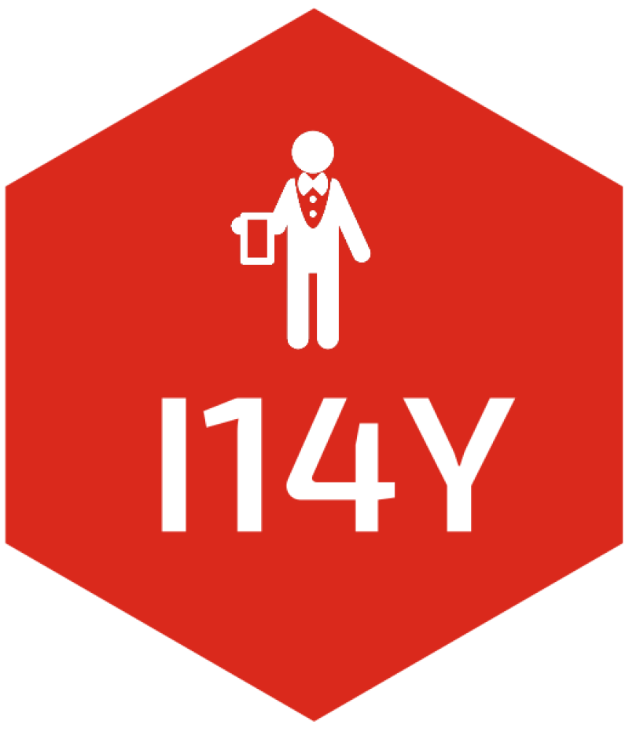

Search entries within a codelist concept
Source:R/i14y_search_codelist.R
i14y_search_codelist.RdCalls the I14Y public API endpoint
/concepts/{conceptId}/codelist-entries/search. This replaces the former
`i14y_search_nomenclature()`: in the new I14Y data model, what used to be a
single multi-level nomenclature is now a set of separate codelist concepts
(e.g. `NOGA_SECTION`, `NOGA_DIVISION`, `NOGA_GROUP`, `NOGA_CLASS`).
Usage
i14y_search_codelist(
id = NULL,
query = NULL,
language = "de",
page = NULL,
pageSize = NULL
)Examples
i14y_search_codelist(
id = "08d94604-e058-62a2-aa25-53f84b974201", # NOGA_DIVISION
query = "agriculture",
language = "fr"
)
#> annotations
#> 1 0a212c98-9ed0-4357-a506-106cf447debe, 6a9889c9-c662-4b21-adff-5c7eb4dbae90, 411ed36c-8e3f-4231-8fb5-55d70e225359, 411ed36c-8e3f-4231-8fb5-55d70e225359, , , ABBREV, INCLUDES, Forstw. u. Holzeinschlag, Diese Abteilung umfasst die Erzeugung von Rundholz sowie die Gewinnung und Sammlung von wachsenden Erzeugnissen des Waldes. Hinzu kommen geringfügig bearbeitete Erzeugnisse wie Brennholz, Holzkohle oder Industrieholz (z. B. Grubenholz, Papierholz usw.). Diese Tätigkeiten können sowohl in natürlichen als auch in angepflanzten Wäldern ausgeführt werden., Forestry and logging, This division includes the production of roundwood as well as the extraction and gathering of wild growing non-wood forest products. Besides the production of timber, forestry activities result in products that undergo little processing, such as firewood, charcoal and roundwood used in an unprocessed form (e.g. pit-props, pulpwood, etc.). These activities can be carried out in natural or planted forests., Sylviculture et exploitation forestière, Cette division comprend la production de bois rond, ainsi que l'extraction et la cueillette de produits forestiers autres que du bois et poussant à l'état sauvage. À côté de la production de grumes, l'exploitation forestière conduit à des produits peu transformés comme le bois de chauffage, le charbon de bois ou le bois rond utilisé sous une forme brute (bois de mine, bois de trituration, etc.). Ces activités peuvent être effectuées dans des forêts naturelles ou dans des plantations., Silvicolt. e utilizzo di aree forestali, Questa divisione include la produzione di tronchi (tondame) per le industrie del settore così come l'estrazione e la raccolta di altri materiali dalle foreste e dai boschi incolti. Oltre alla produzione di tronchi (tondame) le attività forestali danno prodotti che vengono sottoposti ad un minimo di lavorazione, quali la legna da ardere, il carbone e il legname da industria (per esempio, puntelli per miniere, pasta di cellulosa, ecc.). Queste attività possono essere effettuate in foreste naturali o create dall'uomo.\nDalla divisione è escluso ogni ulteriore trattamento del legno a cominciare dal taglio e dalla piallatura (cfr. Divisione 16).
#> 2 d16474e6-3bcf-447a-9464-dd10530b40e1, da8d225a-153d-4bbd-89c3-8b3b0d0a94b8, 056ec921-6947-447b-b836-6f5509f27be2, 056ec921-6947-447b-b836-6f5509f27be2, , , ABBREV, INCLUDES, Landw. u. Jagd, Diese Abteilung umfasst die beiden Tätigkeitsbereiche Gewinnung pflanzlicher Erzeugnisse und Gewinnung tierischer Erzeugnisse. Sie umfasst ferner die ökologische Landwirtschaft sowie den Anbau gentechnisch veränderter Nutzpflanzen und die Haltung gentechnisch veränderter Nutztiere. Diese Abteilung umfasst Freiland- wie auch Gewächshauskulturen.\n\nFerner in dieser Abteilung eingeschlossen sind die Erbringung von mit der Landwirtschaft und der gewerblichen Jagd verbundenen Dienstleistungen sowie die Fallenstellerei und damit verbundene Tätigkeiten.\n\nGruppe 015 (Gemischte Landwirtschaft) bildet eine Ausnahme von den Grundregeln zur Bestimmung der Haupttätigkeit. Man geht hier davon aus, dass in zahlreichen landwirtschaftlichen Betrieben ein Gleichgewicht zwischen pflanzlicher und tierischer Erzeugung besteht und es willkürlich wäre, sie in die eine oder die andere Kategorie einzuordnen., Crop and animal produc., hunting, This division includes two basic activities, namely the production of crop products and production of animal products, covering also the forms of organic agriculture, the growing of genetically modified crops and the raising of genetically modified animals. This division includes growing of crops in open fields as well in greenhouses.\nThis division also includes service activities incidental to agriculture, as well as hunting, trapping and related activities.\nGroup 015 (Mixed farming) breaks with the usual principles for identifying main activity. It accepts that many agricultural holdings have reasonably balanced crop and animal production, and that it would be arbitrary to classify them in one category or the other., Cult. et p. anim., chasse, Cette division comprend deux activités de base, à savoir la production de produits végétaux et la production de produits animaux, ainsi que l'agriculture biologique, la culture de plantes génétiquement modifiées et l'élevage d'animaux génétiquement modifiés. Cette division comprend la culture de plein champ et la culture sous abris.\n\nCette division comprend également les services annexes à l'agriculture, à la chasse, au piégeage et aux activités connexes.\n\nLe groupe 015 (Culture et élevage associés) rompt avec les principes usuels pour identifier l'activité principale. Il tient compte du fait que de nombreuses exploitations agricoles ont une production végétale et animale assez équilibrée et qu'il serait arbitraire de les classer dans l'une ou l'autre catégorie., Prod. vegetali e animali, caccia, Questa divisione include due attività di base, la produzione di prodotti derivanti da coltivazioni agricole e la produzione di prodotti animali; includendo anche le forme di agricoltura biologica, coltivazione di prodotti geneticamente modificati e l'allevamento di animali geneticamente modificati. Questa divisione include la coltivazione di colture in piena aria ed in serre.\n\nInoltre, sono incluse le attività di servizio accessorie all'agricoltura, alla caccia e alle attività a queste relative.\n\nIl gruppo 015 (Coltivazioni agricole associate all'allevamento di animali: attività mista) costituisce una eccezione ai principi generali adottati per l'identificazione dell'attività principale. Si ammette che un'azienda agricola possa avere una ben bilanciata produzione sia agricola che animale. In questo caso sarebbe arbitrario classificare l'azienda in una categoria o nell'altra.
#> code conceptId
#> 1 02 08d94604-e058-62a2-aa25-53f84b974201
#> 2 01 08d94604-e058-62a2-aa25-53f84b974201
#> id
#> 1 411ed36c-8e3f-4231-8fb5-55d70e225359
#> 2 056ec921-6947-447b-b836-6f5509f27be2
#> name.de
#> 1 Forstwirtschaft und Holzeinschlag
#> 2 Landwirtschaft, Jagd und damit verbundene Tätigkeiten
#> name.en
#> 1 Forestry and logging
#> 2 Crop and animal production, hunting and related service activities
#> name.fr
#> 1 Sylviculture et exploitation forestière
#> 2 Culture et production animale, chasse et services annexes
#> name.it
#> 1 Silvicoltura e utilizzo di aree forestali
#> 2 Produzioni vegetali e animali, caccia e servizi connessi